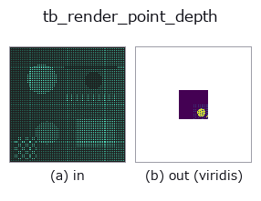

typed op• 数据种类:points → image
• 调用:fullseye.apply(img, "tb_render_point_depth", a=0.5, b=0.5)(2-D 的模型是一张图 + 两个标量旋钮 a,b∈[0,1])

*图为在 128×128 合成输入上实际运行的输出。左为输入，右为输出。点云以俯视散点显示(亮度 = z)，一维序列为折线，体数据为沿 z 的最大值投影，视频为中间帧，复数图像为幅值；无法成像的返回值直接显示数值。*
*输出以类 viridis 伪彩色显示(深紫 = 小，黄 = 大)，便于读取距离、相位、方向、深度这类“量的场”。*
*旋钮 a 不改变输出(实测: 0.1 / 0.5 / 0.9 相同)。*
*旋钮 b 不改变输出(实测: 0.1 / 0.5 / 0.9 相同)。*
阶段(前置算子 → 本算子，从左到右):
▸ tb_render_point_depth: 处理阶段 (文档网站)
换别的图像(合成场景 / 照片 / 硬币。上排为输入，下排为对应输出。旋钮取默认):
▸ tb_render_point_depth: 其他输入图像 (文档网站)
点云 → 深度图像（z-buffer，每个像素取最近点的深度）。用于观测合成/外观检测的示例。
用 project_points(points, K, R, t) 取得 (u, v, z),只对 round 后的像素 (row=v, col=u) 在 size=(H, W) 内且 z > 0 的点,按由远到近的顺序写入,用近的点覆盖(同一像素留下最小 z)。没有点的像素为 0(tsdf_from_depth / depth_to_points 将其视为无效值的约定)。返回值 (H, W) float64,单位为点坐标的单位。
• 1 点 = 1 像素,因此稀疏点云会满是空洞(先用 mesh_to_points 加密)。没有 splat 半径。
• K 为 numpy (3,3),R/t 可省略。
后级: 用 depth_to_points 还原,用 normals_from_depth 求法线,tsdf_from_depth。
桥接到 2-D 进化注册表的 3d op render_point_depth。实现相同,只有调用约定改为 op(v, a, b)。此 op 没有可调点,a 和 b 都不使用。
• 示例数据目录(下载 URL / 许可证) —— 2-D 用 skimage.data(BSD/公有领域)加合成图,3-D 给出真实数据源(Stanford/PDS 等)的下载 URL。
• 算子来历与参考文献 —— 该算子族所依据的研究/方法出处。
下面的程序已确认可以运行(与图相同的输入)。在 Studio 帮助中，此块会变成按钮，可当场加载并运行。
img_to_points 0.50 0.50 tb_render_point_depth 0.50 0.50
下面的示例调用的是底层账本算子 render_point_depth。此桥接算子只是把同一实现适配为 fn(v, a, b) 约定，行为完全相同(只是调用形式不同)。
• sfm_recon — py -3.11 examples_3d/sfm_recon.py
image 作为输入)identity · gaussian · mean_box · bilateral · unsharp · median · min_filter · max_filter
typed)tb_points_to_voxel · tb_estimate_point_normals · tb_iss_keypoints · tb_project_points · tb_statistical_outlier_removal · tb_radius_outlier_removal · tb_voxel_grid_downsample · tb_mls_smooth
*Provenance: ops.py — 2D 算子登记表。本条目由 tools/opdocs.py md 自动生成(请勿手工编辑)。*
© 2026 Kazufumi Furuse — Fullseye operator documentation. Licensed under Apache-2.0.